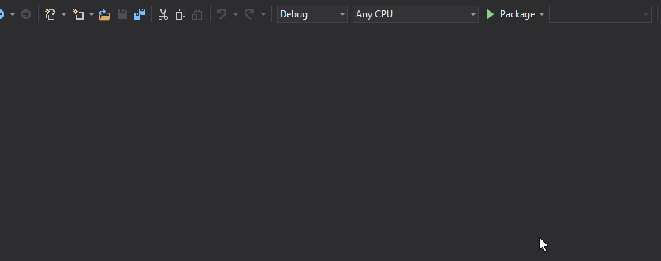
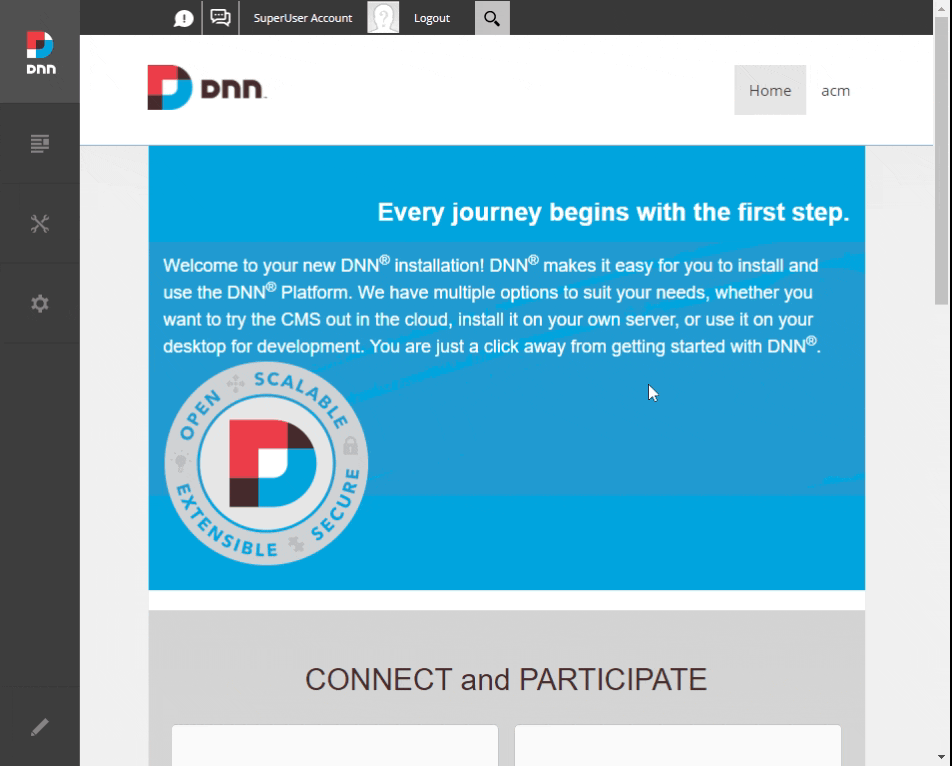

Getting Started
Welcome to you new module template!
First build
-
Package your module
Build tasks are placed in the launch profiles menu in Visual Studio, click the debug button with the Package profile selected. This will fire up a console application to run the module build and will create a Dnn extension package in the website under the
install\modulesfolder.Don't worry about opening up that folder, see next step.
Note
The build script is simply a console application in the build project, it uses Nuke to help with utilities. You can later customize that process simply by editing the Build.cs file.

-
Install your module
Now we need to install the module in Dnn to see it in action. Simply log in as a SuperUser (host) and navigate to Extensions / Available Extensions to install your new module.
Then create a test page and put the module on it.
Note
The module javascript fires up on page load, so after dropping your module you need to refresh the page to see it work.

Congratulations, you have a working module!
Now let's make it a git repository.